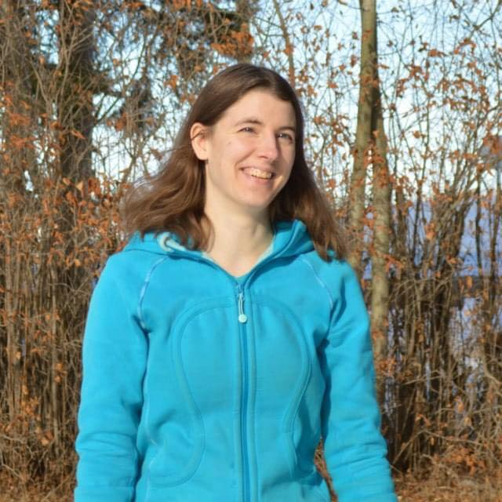

About Me
Hi, my name is Laura, and I am creative, which means I like to code and put colours and fonts together in visual presentations. I also have a passion for animals and their welfare and would love to help out shelters or any other animal-related establishments.
Job: I'm looking for any jobs that will improve and expand my design and development skillset. Graphic design intern, junior front-end developer, web developer, web designer, I'll take anything that gets me where I want to be.
Clients: I'm looking for clients from businesses and non-profits that operate in the animal world. I would like to offer brand and web design to pet shops, veterinarians, rescues, and shelters, to name a few.
Hobbies: 3D modeling, reading fiction books (Harry Potter, Star Wars, Black Stallion, to name a few), writing, planning & designing Dragonriders of Pern game (unofficially), writing, planning, & designing my own game, as well as writing prequel comics, writing short stories, and playing video games, mainly World of Warcraft.
Interests: I love design of all sorts, specifically web design and development and graphic design focusing on brand design. I also have a passion and interest in animal welfare and would like to be involved in behaviour, care, and training of cats, dogs, and horses, or at least hands-on training. As a side note, I'd like to be able to make my own place, so I would like to learn architectural design and construction, and landscaping. Other interests of mine that could be hobbies are sewing, robotics - both mechanical and programming, animation, digital painting, and drawing. (I do ok with drawing, but my proportions are definitely off and I haven't done any for a long time.)